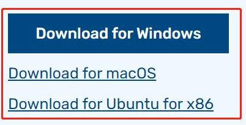
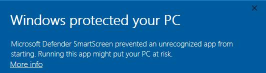
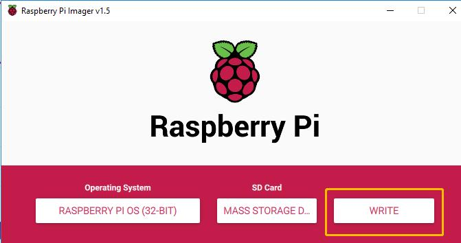
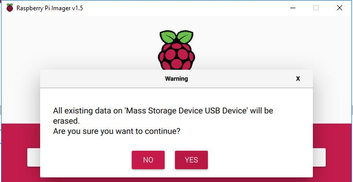
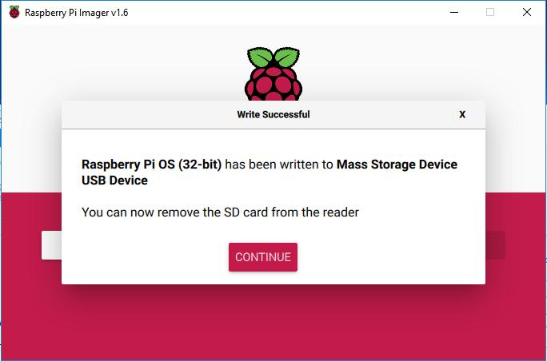
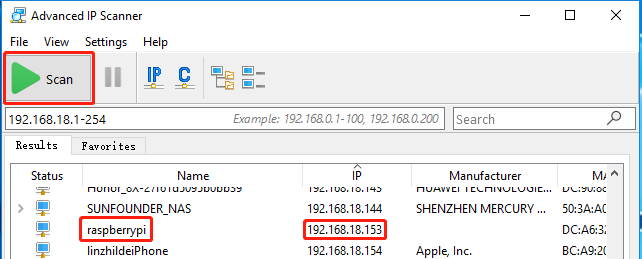
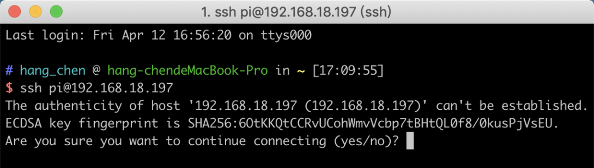
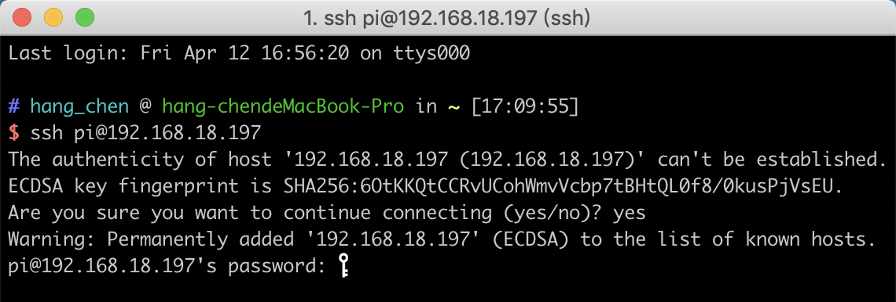
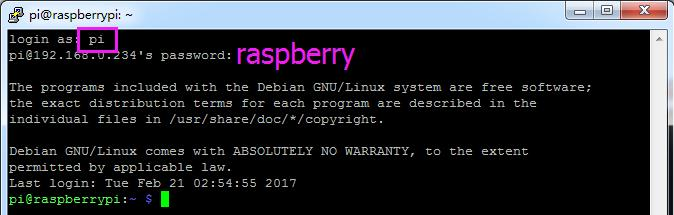

ラズベリー パイを始めよう¶
この章では、まずラズベリーパイの起動方法を学びます。内容には、オペレーティングシステム、ラズベリーパイネットワークをインストールする方法とターミナルの開き方が含まれます。
注釈
完全なチュートリアルは、ラズベリーパイの公式サイト（https://projects.raspberrypi.org/en/projects/raspberry-pi-setting-up）で確認できます
注釈
ラズベリーパイがセットアップされている場合は、この部分をスキップして次の章に進むことができます。
オペレーティングシステムのインストール¶
必要なコンポーネント
任意のラズベリーパイ |
パーソナルコンピュータ*1台 |
マイクロSDカード*1枚 |
ステップ1
ラズベリーパイが開発したグラフィカルなSDカード書き込みツールは、Mac OS、Ubuntu 18.04、Windowsで動作し、イメージをダウンロードして自動的にSDカードにインストールしてくれるので、ほとんどのユーザーにとって最も簡単なオプションです。
ダウンロードページにアクセスします。https://www.raspberrypi.org/software/。お使いのオペレーティングシステムに合ったラズベリーパイイメージャーのリンクをクリックし、ダウンロードが終了したら、それをクリックしてインストーラーを起動します。
ステップ2
インストーラーを起動すると、オペレーティングシステムが実行をブロックしようとする場合があります。例えば、Windowsでは次のようなメッセージが表示されます。
これがポップアップされたら、順次に「More info」と「Run anyway」をクリックした後、指示に従ってラズベリーパイイメージャーをインストールします。
ステップ3
SDカードをパソコンやノートパソコンのSDカードスロットに挿入します。
ステップ4
ラズベリーパイイメージャーで、インストールしたいオペレーティングシステムとSDカードを選択します。

注釈
初回はインターネットに接続されている必要があります。
そのオペレーティングシステムは、将来のオフラインでの使用のために保存されます(ラストダウンロード.キャッシュ、C:/Users/yourname/AppData/Local/Raspberry Pi/Imager/cache, )。そのため、次にソフトを開いたときには、「リリース：日付、あなたのコンピュータにキャッシュされた」という表示になります。
ステップ5
使用中のSDカードを選択します。

ステップ6
「Ctrl+Shift+X」を押すと、SSHの有効化と無線LANの設定を行うための「詳細オプション」ページが開きます。この2つの項目は必ず設定する必要がありますが、その他の項目はあなたの選択次第です。このイメージカスタマイズオプションを常に使用するように選択することができます。

その後、下にスクロールしてWifiの設定を完了し、「保存」をクリックします。
注釈
**wifiの所在地**は、ラズベリーパイを使用している国の`ISO/IEC alpha2 code <https://en.wikipedia.org/wiki/ISO_3166-1_alpha-2#Officially_assigned_code_elements>`__の2文字のコードを設定してください、以下のリンクを参照してください：https://en.wikipedia.org/wiki/ISO_3166-1_alpha-2#Officially_assigned_code_elements

ステップ7
「書込み」ボタンをクリックします。
ステップ8
SDカードに何らかのファイルが保存されている場合は、それらのファイルを永久に失わないようにするために、まずそれらのファイルをバックアップすることをお勧めします。バックアップするファイルがない場合は、「イェス」をクリックします。
ステップ9
一定時間を待った後、書き込み完了を表す以下のウィンドウが表示されます。
Raspberry Piに電源を入れる¶
USBカードリーダーを取り出し、SDカードをRaspberryPiに挿入します。
完全に充電された2つの18650バッテリーをホルダーに入れ、バッテリーホルダーからのワイヤーを開発ボードに差し込み、スイッチをオフからオンに切り替えます。 また、最初のテストに時間がかかるため、RaspberryPiの電源アダプターを使用してカーキットに電力を供給することをお勧めします。
IPアドレスを取得する¶
Raspberry Piの電源を入れたら、そのIPアドレスを取得する必要がある。IPアドレスを知る方法はたくさんあるが、そのうちの2つを以下のように示す。
1. ルーター経由で確認する
ルーター（ホームネットワークなど）にログインする権限がある場合は、ルーターの管理インターフェイスでRaspberry Piに割り当てられたアドレスを確認できる。
システムのデフォルトのホスト名－Raspberry Pi OS は**raspberrypi**であり、それを見つける必要がある。（ArchLinuxARMシステムを使用している場合は、alarmpiを見つけてください。）
2. ネットワークセグメントスキャン
ネットワークスキャンを使用して、Raspberry PiのIPアドレスを検索することもできる。ソフトウェア、**アドバンスドIPスキャナー（Googleからダウンロード）**を使える。
「スキャン」をクリックすると、接続されているすべてのデバイスの名前が表示される。同様に、Raspberry Pi OSのデフォルトのホスト名は**raspberrypi**であり、今ホスト名とそのIPを見つけてください。
{kind=link}
SSHリモートコントロールを使用する¶
SSHを適用することにより、Raspberry PiのBash Shellを開くことができる。BashはLinuxの標準のデフォルトシェルである。シェル自体は、お客様とUnix/Linuxをリンクするブリッジである「C」で書き込まれるプログラムである。さらに、必要な作業のほとんどを完了することに役立ち。
Linuxまたは/ Mac OS Xユーザーの場合¶
ステップ1
Applications->**Utilities**に入り、**Terminal**を見つけてから開く。
ステップ2
**ssh pi @ ip_address**を入力する。「pi」はユーザー名で、「ip_address」はIP アドレスである。例えば：
ssh pi@192.168.18.197
ステップ3
「yes」を入力する
ステップ4
デフォルトのパスワード「raspberry」を入力する。
ステップ5
これで、Raspberry Piが接続され、次のステップに進む準備ができた。

注釈
パスワードを入力すると、ウィンドウに文字が表示されないが、これは正常である。必要なのは、正しいパスコードを入力するだけである。
Windowsユーザーの場合¶
Windowsユーザーの場合、いくつかのソフトウェアのアプリケーションでSSHを使用できる。ここでは、**PuTTY**を推薦する（Googleからダウンロードできる）。
ステップ1
PuTTYをダウンロードする。PuTTYを開き、左側のツリー構造にある**Session**をクリックする。**Host Name (or IP address)**の下のテキストボックスにRPiのIPアドレスを入力し、**ポート**に**22**（デフォルトでは22）を入力する。

ステップ2
**Open**をクリックする。IPアドレスを使用してRaspberry Piに初めてログインすると、安全上の指示が表示されることに注意してください。**Yes**をクリックする。
ステップ3
PuTTYウィンドウに「login as：」と表示されたら、「pi」（RPiのユーザー名）とパスワード「raspberry」（変更していない場合はデフォルトのパスワードである）を入力する。
ここで、Raspberry Piを接続し、次の手順を実行する。